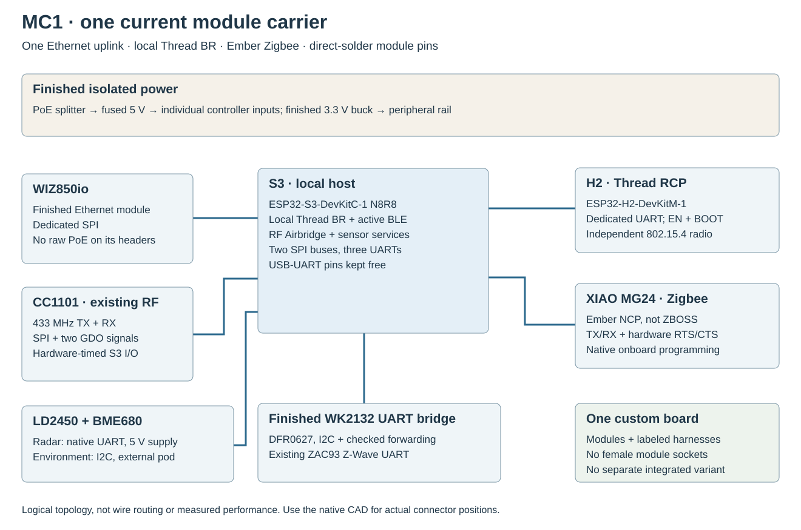
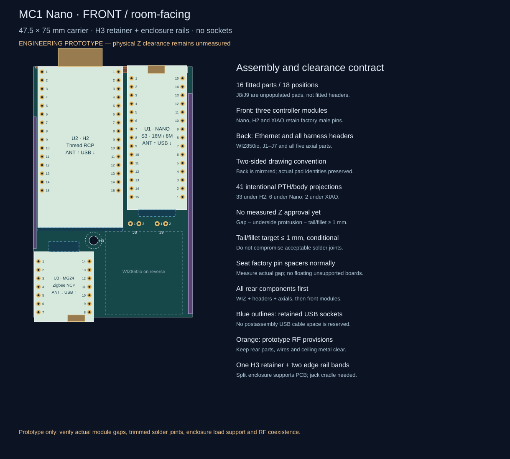
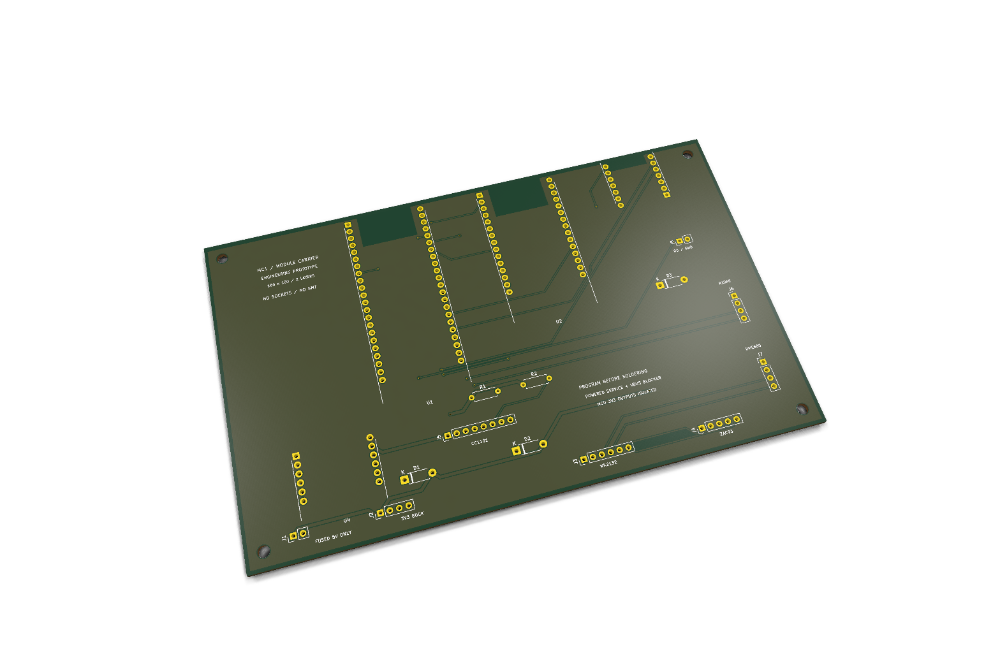
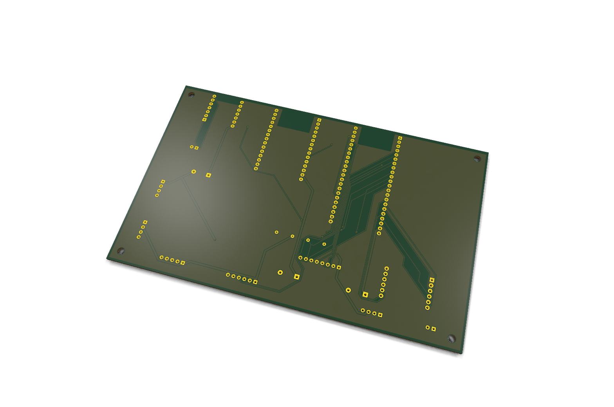
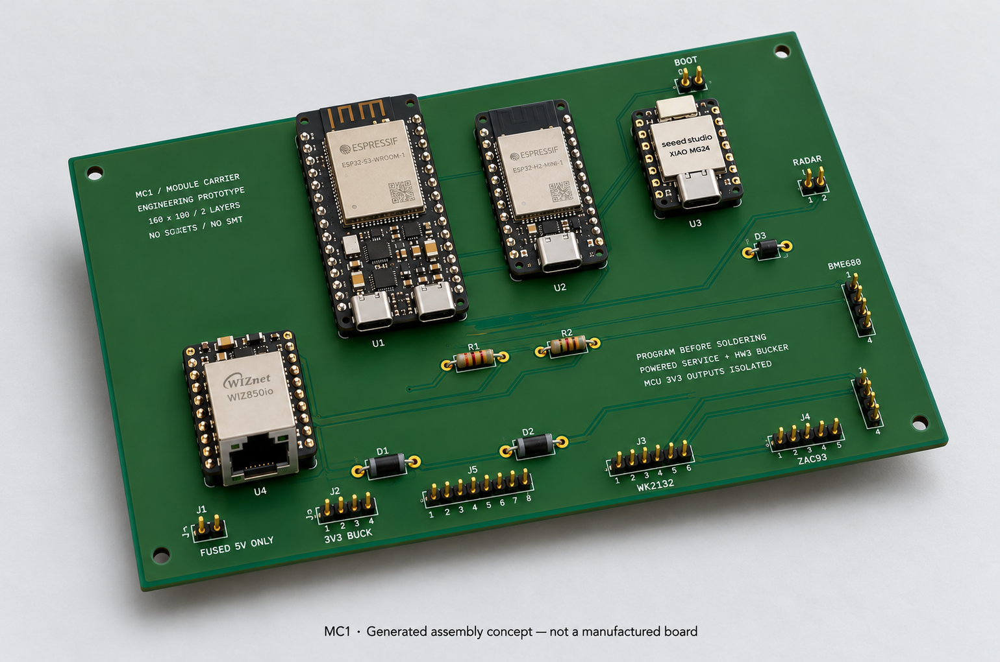
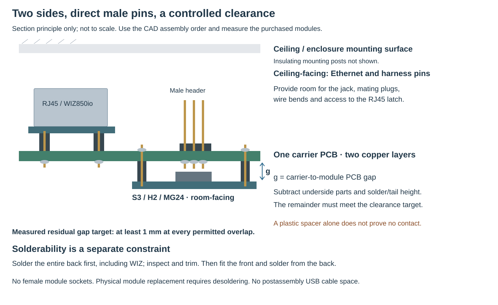
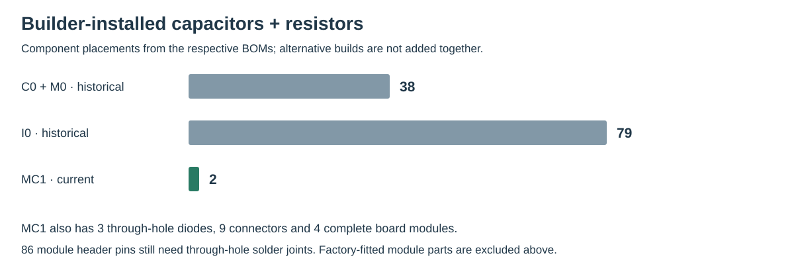

HA RADIO HUB / MC1 / 17 OCTOBER 2026
One carrier.
Finished modules.
Familiar protocols.
S3 + H2 + Ember MG24. Keep the local Thread border router and Home Assistant interfaces. Solder factory module pins directly into the carrier.
The selected architecture

The former C0/M0, I0 and D0 paths are historical references. The all-H2 experiment was not selected because its local border-router implementation and Zigbee integration/backup behavior did not meet the compatibility priority.
The current PCB



Assembly illustration

Function and compatibility contract
These are the functions retained in the design. The last column names the hardware acceptance still required; a retained protocol is not a completed bench test.
| Function | Implementation | Retained interface | Bench acceptance |
|---|---|---|---|
| Thread | Local S3 border router + dedicated H2 RCP | IPv6, multicast, HA REST integration | Network commissioning, recovery and concurrent traffic |
| Zigbee | XIAO MG24, board-specific Ember NCP | Ember/EZSP family, RTS/CTS, normal ZHA / Zigbee2MQTT path | Pairing, backup/restore, antenna switch and flow control |
| Bluetooth | S3 active ESPHome proxy | Advertisements and active BLE connections | Simultaneous connections with other radios |
| Z-Wave | Existing ZAC93 through WK2132 UART bridge | Regional radio and Z-Wave proxy interface | Lossless byte forwarding, errors, resets and full-size frames |
| 433 MHz RF | Existing CC1101, S3 hardware-timed I/O | RF Airbridge MQTT, native transmit and receive events | Physical timing, reception and transmit regression |
| Presence | Existing LD2450 on native UART | Measurements, configuration and control | Target tracking and all control actions |
| Environment | BME680 in external ventilated pod | Temperature, humidity, pressure, gas resistance | I2C stability and thermal bias |
Actual net endpoints
Generated from the current MC1 CAD design source. References identify carrier pads, not arbitrary clone pin numbers. Module connector labels and physical orientation must match the CAD.
| Net | Carrier endpoints |
|---|---|
| +3V3 | U4.J2.2 · U4.J2.3 · J2.3 · J3.1 · J4.1 · J5.1 · J7.2 · R1.1 · R2.1 |
| +5V | J1.1 · J2.1 · J6.1 · D1.2 · D2.2 · D3.2 |
| +5V_H2 | U2.J1.14 · D2.1 |
| +5V_S3 | U1.J1.21 · D1.1 |
| +5V_ZB | U3.14 · D3.1 |
| ETH_CS | U1.J1.20 · U4.J1.5 |
| ETH_INT | U1.J1.16 · U4.J1.6 |
| ETH_MISO | U1.J1.18 · U4.J2.6 |
| ETH_MOSI | U1.J1.17 · U4.J1.3 |
| ETH_RESET | U1.J1.15 · U4.J2.5 |
| ETH_SCK | U1.J1.19 · U4.J1.4 |
| GND | U1.J1.22 · U1.J3.1 · U1.J3.21 · U1.J3.22 · U2.J1.13 · U2.J1.15 · U2.J3.1 · U2.J3.10 · U2.J3.12 · U2.J3.15 · U3.13 · U4.J1.1 · U4.J1.2 · U4.J2.1 · J1.2 · J2.2 · J2.4 · J3.2 · J4.2 · J4.3 · J5.2 · J6.2 · J7.1 · J8.2 |
| I2C_SCL | U1.J3.5 · J3.4 · J7.4 |
| I2C_SDA | U1.J3.4 · J3.3 · J7.3 |
| RADAR_RX | U1.J3.9 · J6.3 |
| RADAR_TX | U1.J3.8 · J6.4 |
| RF_CS | U1.J1.8 · J5.6 · R2.2 |
| RF_GDO0 | U1.J1.4 · J5.7 · R1.2 |
| RF_GDO2 | U1.J1.5 · J5.8 |
| RF_MISO | U1.J1.6 · J5.5 |
| RF_MOSI | U1.J1.12 · J5.4 |
| RF_SCK | U1.J1.7 · J5.3 |
| THREAD_BOOT | U1.J3.16 · U2.J3.11 |
| THREAD_EN | U1.J3.17 · U2.J1.2 |
| THREAD_RX | U1.J3.7 · U2.J1.9 |
| THREAD_TX | U1.J3.6 · U2.J1.10 |
| ZB_BOOT_SERVICE | U3.1 · J8.1 |
| ZB_CTS | U1.J1.9 · U3.5 |
| ZB_RTS | U1.J3.18 · U3.6 |
| ZB_RX | U1.J1.10 · U3.8 |
| ZB_TX | U1.J1.11 · U3.7 |
| ZWAVE_RX | J3.5 · J4.4 |
| ZWAVE_TX | J3.6 · J4.5 |
Direct solder mounting

- Match exact module revisions to the drawings. Program each module before permanent assembly.
- Dry-fit the male pins in the plated holes. Check USB access and antenna keepouts.
- Fit the listed through-hole parts, then solder module pins from the underside. No female module sockets.
- Wire the finished isolated power and UART modules and the existing radios/sensors to the labeled carrier connectors.
- Check polarity, continuity and loaded rail voltages before connecting the full assembly.
- Commission one function at a time, then test all functions together including power loss and recovery.
What is removed from manual assembly

Carrier parts and module references
| Reference | Part | Assembly notes |
|---|---|---|
| U1 | ESP32-S3-DevKitC-1-N8R8 v1.1 | Factory male headers solder directly; 3V3 outputs NC; USB19/20 and bridge43/44 untouched; no sockets |
| U2 | ESP32-H2-DevKitM-1-N4S | RCP RX4 TX5; native USB and UART bridge pins untouched; 3V3/VBAT NC |
| U3 | Seeed XIAO MG24 pre-soldered 102010690 | External UART PC06/PC07; CTS PC04 RTS PC05; USB probe preserved; 3V3 OUT NC |
| U4 | WIZ850io finished module | Direct factory pins; two1x6 at20.32 rowspacing; NO PoE extraction;3.3V only |
| J1 | FUSED ISOLATED 5V INPUT | Offboard assembled active PoE splitter and fused 5V harness. No raw PoE voltage on carrier. |
| J2 | D24V22F3 external assembled buck | Harness interface only; pin1 buckVIN; pin2GND;pin3buckVOUT;pin4GND. Buck remains separate ready module. |
| J3 | DFR0627 WK2132 ready module harness | Harness to DFR0627 I2C and UART1, no WK2132 SMD on carrier. J3.5=module TX1;J3.6=module RX1; IA1=1 IA0=1; register address 0x70, FIFO 0x71; verify physical markings. |
| J4 | ZAC93 ready module harness | Carrier1->ZACpin1;2->pin6;3->pin9;4->pin8RX;5->pin10TX. Different from ZAC physical header layout. |
| J5 | CC1101 ready module harness | 3.3V; GDO0 open-drain TX with external4.7k pullup; GDO2 receiver. |
| J6 | LD2450 radar harness | Carrier3->radarRX;carrier4<-radarTX;5V supply;3.3V data. |
| J7 | BME680 external pod harness | External pod,1GND2VDD3SDA4SCL;I2C pullups on modules;do notaddunreviewedpullups. |
| D1 | 1N5819 USB supply isolation | Cathodepad1->board5V;anodepad2->fused5Vbus. VerifyUSBprogrammingpowerpaths;forwarddropheadroom. |
| D2 | 1N5819 USB supply isolation | Cathodepad1->board5V;anodepad2->fused5Vbus. VerifyUSBprogrammingpowerpaths;forwarddropheadroom. |
| D3 | 1N5819 USB supply isolation | Cathodepad1->board5V;anodepad2->fused5Vbus. VerifyUSBprogrammingpowerpaths;forwarddropheadroom. |
| R1 | 4.7k RF GDO0 pull-up | |
| R2 | 10k RF CS idle pull-up | |
| J8 | XIAO BOOT service short to GND | Temporary short D0/PC00 to GND while resetting XIAO for recovery. Normally OPEN. |
What has actually been checked
| Check | Result | Scope / limitation |
|---|---|---|
| Native KiCad 10.0.6 ERC / DRC | 0 violations, 0 unrouted, 0 parity issues | Final native schematic and routed PCB; passive module terminals do not validate internal circuits |
| Mechanical and pin geometry | 7 tests passed; independent review checked 145 pad entries | Manufacturer-derived dimensions and net assignments; purchased module fit and RF remain untested |
| CAD / firmware interface contracts | 9 tests passed | S3 interfaces, MG24 flow control, power isolation, USB pins and single current design |
| Complete S3 firmware | Compiled: 1,717,296-byte OTA image; 161,579 bytes static RAM | ESPHome 2026.9.1 / IDF 5.5.5, seven function groups; not runtime free-heap measurement |
| H2 Thread RCP | Compiled: 208,928 bytes; RX4 / TX5 | IDF 5.5.5; open-drain S3 reset/boot control confirmed in compiled source |
| XIAO MG24 Ember NCP + bootloader | Compiled; 9 recipe/image tests passed | SiSDK 2025.6.3 / EmberZNet 8.2.3 / EZSP18; pairing and network restore remain untested |
| WK2132 transport | 14 ASan / UBSan tests passed | Production queue/FIFO core with device model; dedicated worker compiled; physical timing remains untested |
| Images and diagrams | Native CAD exports plus labeled generated assembly concept | Illustrations are not measurements or fabrication evidence |
Machine-readable verification summary · Firmware evidence and build instructions · Native CAD and reports · Image provenance
Still requires the real assembly
- Power and diode headroom
- USB/back-power isolation in the real assembly
- Mechanical fit and antenna spacing
- RF coexistence and range
- End-to-end ZHA / Thread / Z-Wave commissioning
- Simultaneous workload reliability
One current layout reduces the choice and assembly burden. Board-specific firmware configuration and UART-transport hardening remain real work; no claim of zero software changes or guaranteed lower power is made.
Manufacturer and implementation sources
The current MC1 documentation is in English. Old hardware images retain their original identity and provenance in the historical archive.